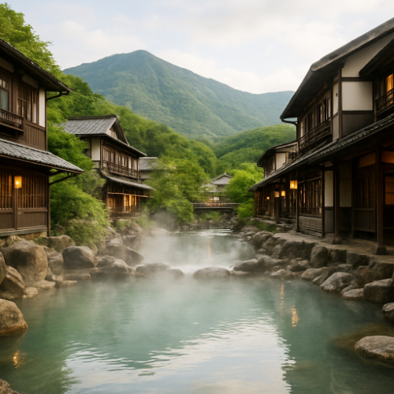

Hakone Onsen – Relax in Japan's Famous Hot Springs

Hakone Onsen (箱根温泉) is one of Japan's most famous hot spring resorts, located just a short distance from Tokyo. Known for its natural mineral-rich baths and serene surroundings, Hakone offers a relaxing retreat, perfect for those seeking to unwind in Japan's healing waters while enjoying stunning views of Mount Fuji and the surrounding mountains.
Relax in Traditional Hot Spring Baths
Hakone is home to numerous onsen resorts offering traditional Japanese hot spring baths. Many of these resorts provide both indoor and outdoor baths, allowing visitors to enjoy the therapeutic benefits of the mineral-rich water while taking in beautiful natural landscapes. Whether you’re enjoying a private bath or a communal one, Hakone offers a truly unique and calming experience.
Scenic Views of Mount Fuji
In addition to the onsen, Hakone is famous for its picturesque views of Mount Fuji. Many onsen resorts and public baths are situated in locations that provide breathtaking panoramas of Japan's iconic peak, especially during clear days. Take a moment to relax in the warm waters while gazing at the majestic mountain in the distance.
Other Attractions in Hakone
Hakone is not just about onsen. Visitors can also explore a variety of other attractions, including the Hakone Open-Air Museum, which displays beautiful sculptures in a stunning outdoor setting. You can also take a scenic boat cruise on Lake Ashi or ride the Hakone Ropeway for amazing aerial views of the area.
How to Get to Hakone
- 🌸 From Tokyo Station: Take the JR Tokaido Shinkansen to Odawara Station, then transfer to the Hakone Tozan Railway (approx. 1.5 hours total)
- 🌸 Taxi: Direct taxi ride from Odawara Station or Hakone-Yumoto Station to your chosen onsen resort
- 🌸 Best time to visit: Hakone can be visited year-round, but autumn and spring offer the best scenic views
- 🌸 Best photo spots: Mount Fuji from Lake Ashi, outdoor hot spring baths, Hakone Open-Air Museum
Why Hakone Onsen is a Must-Visit for Relaxation Seekers
If you're looking to experience traditional Japanese hot springs in a serene and scenic environment, Hakone Onsen is the perfect destination. Whether you’re here for a day trip or a longer stay, Hakone offers the ideal setting for relaxation, healing, and connecting with nature.
Tags: Hakone Onsen, Japan hot springs, hot spring resorts, Mount Fuji views, Hakone tourism, Japanese relaxation, Lake Ashi, Hakone attractions
Planning to visit Hakone Onsen?
To get the most immersive and insightful experience, we recommend booking a certified local private guide from our team. All our guides are licensed professionals officially recognized by the Japanese government, offering personalized tours tailored to your interests. Please contact your selected guide in advance to confirm availability and get expert assistance for your trip.